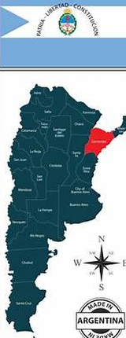
Trabajo Final 2026 · Doctorado en Desarrollo Territorial · UNRC
Loreto, territorio posible
Proyecto preliminar de ordenamiento territorial participativo
Una hoja de ruta para integrar humedales, casco urbano, patrimonio y desarrollo local.
Integrantes: Sebastián Slobayen y Juan Pablo Ybarra
Materia: Ordenamiento y Planificación Territorial
Docente: Dra. Vanesa Crissi Aloranti · Territorio: Loreto, Corrientes
Materia: Ordenamiento y Planificación Territorial
Docente: Dra. Vanesa Crissi Aloranti · Territorio: Loreto, Corrientes
01 · Alcance exacto
Qué se propone
Diseñar un proyecto para iniciar proceso de ordenamiento territorial.
- Producto: hoja de ruta técnica y política.
- Escala: localidad de Loreto y entorno de influencia.
- Enfoque: territorial, participativo y ambiental.
Proyecto preliminar
→Proceso participativo
→Plan de OT
02 · Introducción territorial
Localización estratégica
Argentina → Corrientes → Departamento San Miguel → Loreto → Sistema Iberá
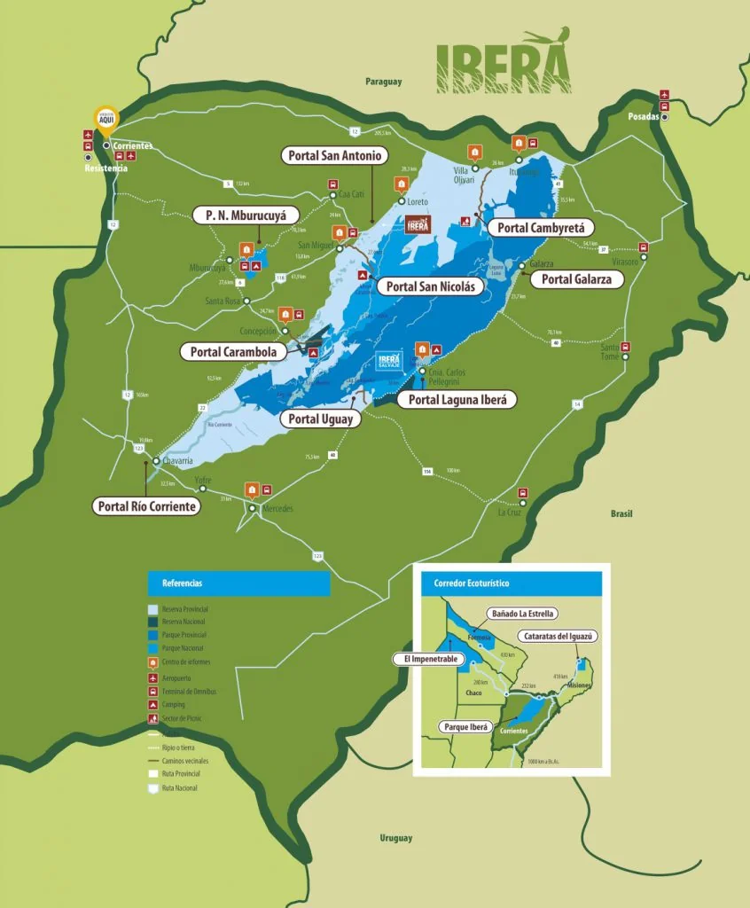
San Miguel / LoretoCorrientes
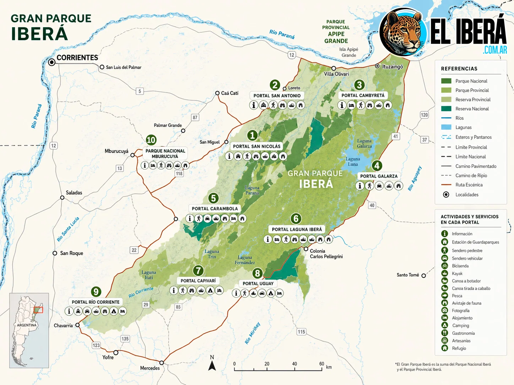
Sistema Iberá
03 · Introducción
Por qué Loreto
Loreto combina pequeña escala urbana, cercanía al Iberá, patrimonio cultural y déficits de infraestructura que requieren mirada integrada.
- Localidad del Departamento San Miguel.
- Vinculación territorial con el Portal San Antonio.
- Escala poblacional reducida: oportunidad para un proceso participativo viable.
3.513
habitantes
Dato provincial basado en Censo 2022
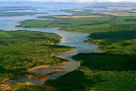
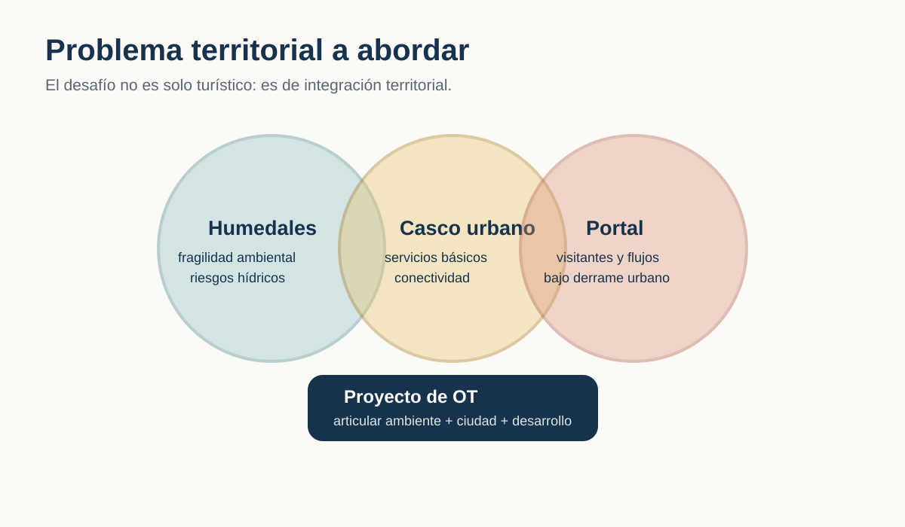
05 · Necesidades, potencialidades y limitaciones
El punto fino del problema
Necesidad
Ordenar el crecimiento, mejorar servicios básicos y anticipar conflictos de uso del suelo.
Potencialidad
Humedales, lagunas, patrimonio jesuítico-guaraní, identidad local y turismo de naturaleza.
Limitación
Débil articulación entre el portal, el casco urbano y las capacidades de gestión local.
Hipótesis
El desarrollo local depende de integrar ambiente, ciudad, patrimonio y actores en una agenda común.
06 · Antecedentes
No se parte de cero
Loreto cuenta con insumos valiosos. El proyecto propone articularlos en clave de ordenamiento territorial.
Código Urbano Ambiental: áreas de planificación, usos del suelo, patrimonio y protección ambiental.
Plan turístico: identifica recursos, actores, oferta, estacionalidad y programas posibles.
Marco ambiental: Ley 25.675, ordenamiento ambiental, participación e información.
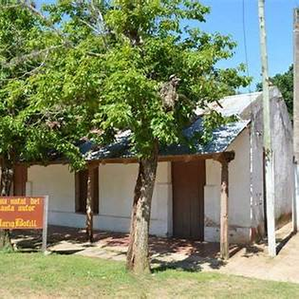
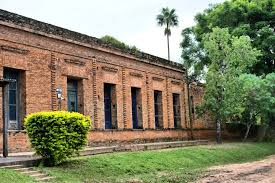
07 · Objetivos
Objetivo general
Diseñar un proyecto preliminar de ordenamiento territorial participativo para Loreto, orientado a integrar protección ambiental, organización urbano-servicial y aprovechamiento sostenible de sus potencialidades culturales, turísticas y comunitarias.
1. Caracterizar
el sistema territorial.
2. Identificar
problemas, necesidades y potencialidades.
3. Proponer
metodología, cronograma y gobernanza.
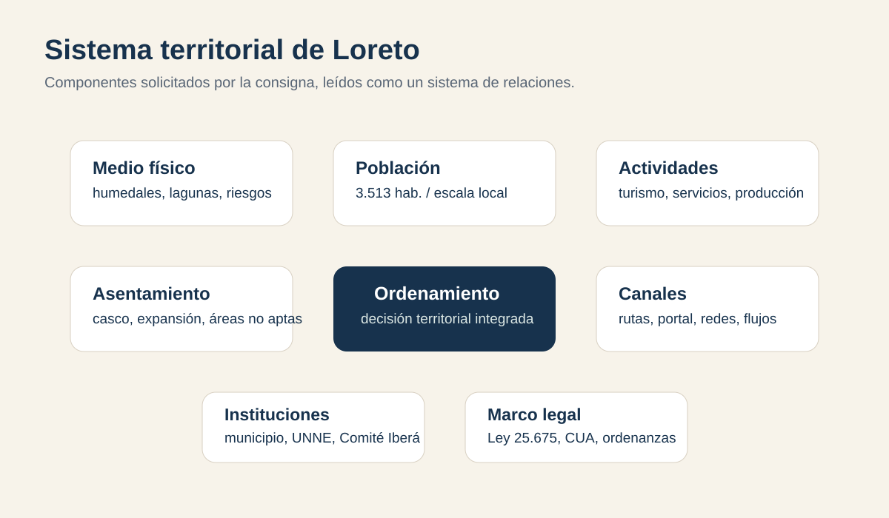
09 · Vuelo conceptual aplicado
Ciencia transformadora
El conocimiento no queda en diagnóstico: debe organizar decisiones, acuerdos y capacidades de acción.
- Inteligencia Territorial: mesa de cuatro patas.
- Bottom-up: problemas definidos con actores locales.
- Araña y hormiga: datos territoriales + redes de cooperación.
Político
Municipio / Provincia
Municipio / Provincia
Académico
UNNE
UNNE
Productivo
prestadores / emprendedores
prestadores / emprendedores
Social
vecinos / instituciones
vecinos / instituciones
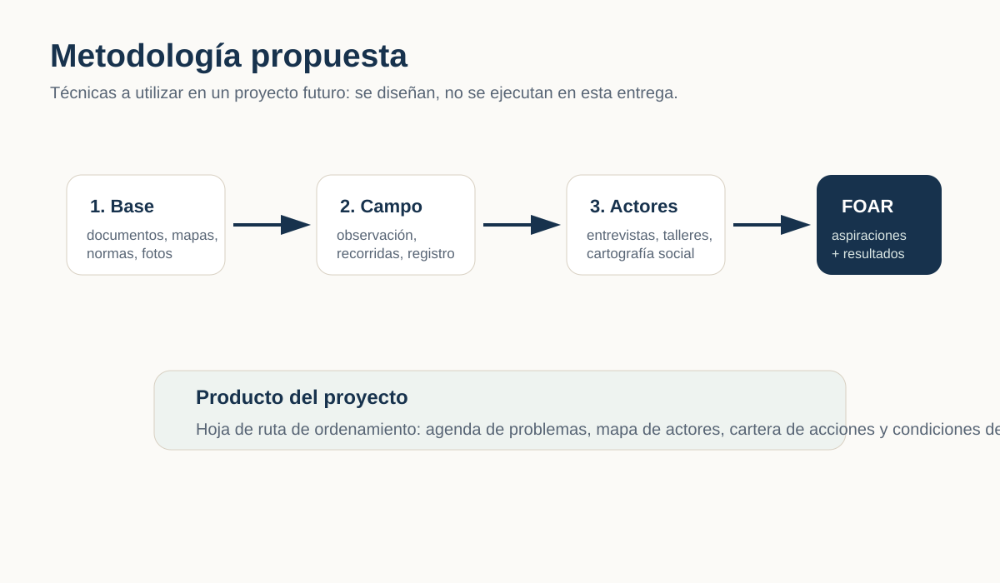
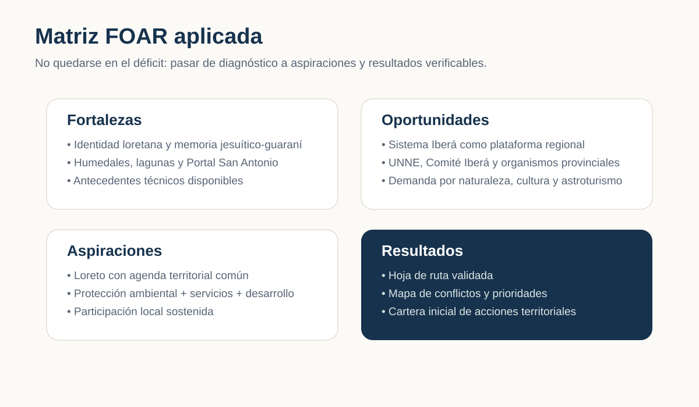
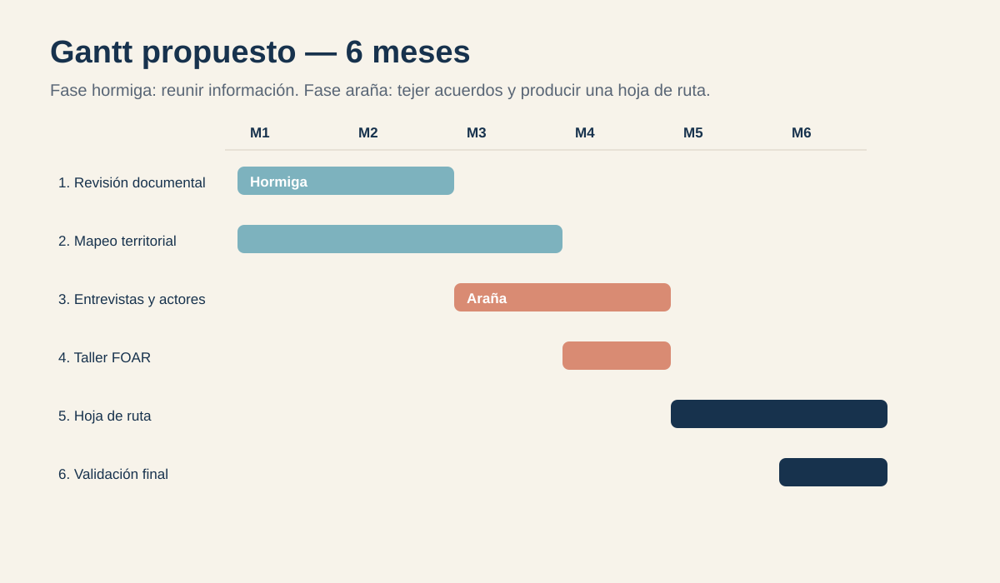
13 · Factibilidad y concreción
Posibilidad estimada: 100%
Factibilidad plena como proyecto preliminar: el trabajo puede concretarse integralmente en tanto propuesta académica y hoja de ruta para la acción institucional futura.
Recursos disponibles: antecedentes técnicos, equipo académico, escala local manejable, actores identificables.
Condiciones críticas: aval municipal, agenda de talleres, acceso a información y continuidad institucional.
Producto esperable: hoja de ruta validable para presentar al municipio y al Comité Iberá.
14 · Cierre
Territorio posible
Ordenar Loreto significa construir una agenda situada donde ambiente, comunidad, patrimonio y economía local puedan decidirse en común.
De los saberes a los haceres: datos suficientes, actores sentados y decisiones territorialmente responsables.
15 · Bibliografía y fuentes de base
Fuentes principales
- Crissi Aloranti, V. Consignas del Trabajo Final 2026. UNRC.
- Gómez Orea, D. Ordenación territorial.
- Bozzano, H. Territorios posibles e inteligencia territorial.
- Massiris Cabeza, A. Ordenamiento territorial y desarrollo.
- Ley Nacional 25.675. Ley General del Ambiente.
- Documentos base: Código Urbano Ambiental Loreto; Plan Estratégico de Desarrollo Turístico Loreto 2025–2035; Parque Iberá; Municipio de Loreto.